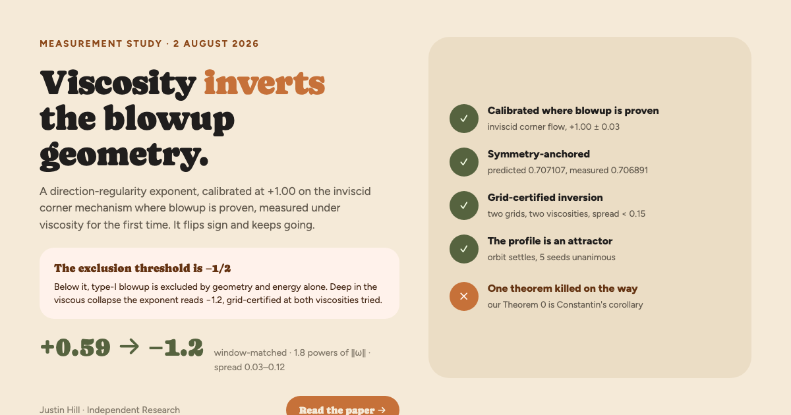

Viscosity inverts the corner-flow blowup geometry
A measured exponent crosses the type-I exclusion threshold.
Justin Hill, Independent Research. The direction-regularity criteria of Constantin, Fefferman, Beirão da Veiga and Berselli, turned into one measurable number and pointed at the strongest known blowup mechanism of this class: sigma_Lambda, the scaling exponent of sup |grad ξ| |ω|−1/2 at the vorticity peak. Calibrated at +1.00 on the inviscid corner flow, where blowup is proven (Chen and Hou). Window-matched, the deep inviscid slope is +0.59; under viscosity it reads −1.2.
If a viscous singularity inherits the corner mechanism, sigma_Lambda must stay above −1/6 as the collapse deepens. Below −1/2, the exclusion chain, which runs through one structural hypothesis (H) carrying a measured constant, excludes type-I blowup for this mechanism class by geometry and energy. Measured deep in the collapse, on matched cross-grid amplitude windows:
As far as a live literature kill-search reaches, no direction-regularity exponent has previously been measured as a function of viscosity on any blowup candidate. The qualitative principle that direction coherence excludes type-I blowup belongs to Giga and Miura and to Barker and Prange, in this very geometry. What is new is the exponent, the calibration on a proven case, and the number. Bounds owned: two viscosities, one mechanism class, one scenario geometry, laptop resolution.
The instrument, and the orbit
Lambda pairs the direction gradient with the −1/2 power of vorticity because the Navier-Stokes rescaling forces exactly that pairing; the same 1/2 lives in the sharp Hölder class of Beirão da Veiga and Berselli before it lives here. The exponent is fit over gated snapshots only: spectral tail at 10−6, signed circulation drift, 2×-HWHM peak box, bootstrap intervals on every slope quoted.
A Lyapunov-certified march in the self-similar corner frame, with definiteness decided by Cholesky factorization only, shows perturbed orbits ride one nearly fixed direction back to the profile. Five independent seeds at the largest basin-validated amplitude, every bootstrap interval inside one regime, unanimous. Two independent instruments: the settling verdict says the attractor is real; the deep-collapse exponent says viscosity drives its direction-regularity scaling below both thresholds.
| Certification | Value | Standing |
|---|---|---|
| Amplitude-symmetry anchor, predicted 0.707107 | measured 0.706891 ± 0.001441 | closed · zero free parameters |
| 2×2 off-ray grid factorial | spread 0.029 | closed |
| Backwards proof, 15 checks, 3 tiers | 15/15, worst EXACT deviation 3.05×10−4 | watcher reruns every 20 min |
| Milestone ladder M1–M5 (frozen 2026-07-30; M1 bar amended 2026-08-02, EJA #72) | all PASS | PROJECT COMPLETE |
| Deep-window snapshot counts | n = 11–14 viscous (9–11 matched inviscid), CI half-widths ±0.14–0.30 | carried honestly · spread is the certification |
What the kill-search killed
A live literature search graded every novelty-bearing claim before this page existed. A kill-search that kills nothing was not run hard enough. This one killed one of our theorems and two of our own numbers.
Confirmed means not found by this search, never proven absent. The full verdict table, with the prior-art map and the standing citation obligations, is NOVELTY.md; the graded claims ledger discipline is unchanged from the July note.
Still open
The strip −1/2 ≤ σ ≤ 0. Corollary 0 forbids the top under viscosity at a growing maximum; the quantified exclusion chain needs the bottom. Close the strip analytically and type-I Navier-Stokes blowup is finished for this route. The measurement now says the mechanism itself lives below the strip at both viscosities measured.
The crossover amplitude Ac(ν), where each run flips from inviscid-like scaling to depletion, is visible in every viscous run and unmeasured as its own observable. Its scaling with viscosity would pin where, not just whether, viscosity restores direction regularity. Stream data exists at ν = 3×10−4, 3×10−5 and 10−5 with no retained snapshots; the curve beyond the two certified viscosities is unmeasured.
I set the questions, imposed the discipline, and decided what to pursue, what to retract, and what to publish. The derivations, the code, and the prose were carried out by Claude (Anthropic) under my direction, and the paper states exactly which parts I can and cannot defend at expert level. I am not a mathematician by training. I worked on this because it interested me, and I had fun doing it.
Tool disclosure: this work is AI-assisted, and the paper says exactly how — which parts the author can defend at expert level, which are machine-derived and awaiting expert review, and where responsibility lies. See the disclosure section in the PDF, written to the Leiden Declaration's recommendations.
The image social platforms show for this page. 1200×630.
{kind=link}
